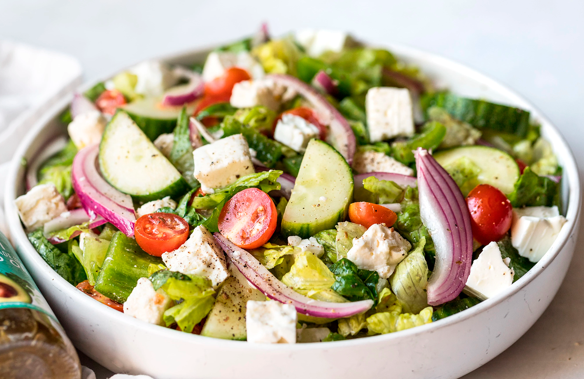

Добро пожаловать, Мария!
12
Рецептов
54
Избранных
8
Комментариев
Ваши рецепты


Избранные рецепты

Греческий салат
от Натальи

Лазанья
от Олега
Уведомления
- 🎉 Ваш рецепт «Шоколадный торт» набрал 50 лайков!
- 💬 Новый комментарий к рецепту «Паста с соусом»
- 📌 Новый избранный рецепт добавлен в вашу коллекцию
Последние комментарии
👩🍳 Анна о «Овощной салат»:
"Очень освежающий, добавила немного лимона — супер!"
👨🍳 Игорь о «Паста с соусом»:
"Просто и вкусно! Спасибо!"